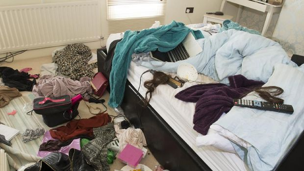

Viral Kos Wanita Penuh Sampah, Apa Penyebab Hoarding Disorder?

Dalam video yang beredar, kamar itu terlihat tak terurus dan sangat berantakan. Ada genangan air, tumpukan kardus, sampah berserakan, dan berbagai barang serta tumpukan pakaian dimana-mana.
Lantas apa itu hoarding disorder? Dan apa yang menyebabkan seseorang bisa mengalami hoarding disorder?
Hoarding disorder biasanya ditunjukan dengan kesulitan membuang barang dan lebih senang menimbunnya hingga menumpuk berantakan. Mengutip Mayo Clinic, orang yang mengidap gangguan ini biasanya merasa tertekan saat harus membuang barang atau sampah tertentu.
Akibatnya, orang tersebut lebih senang menyimpan dan mengumpulkan barang-barang tersebut hingga menumpuk menjadi sampah. Meski ruangannya sangat berantakan akibat tumpukan sampah, orang dengan kondisi ini tidak merasa terganggu sedikit pun.
Mereka menganggap hal itu lumrah dan biasa saja. Hal inilah yang membuat sulit mengajak orang dengan gangguan hoarding disorder melakukan pengobatan.
Meski demikian, pengobatan intensif tetap diperlukan. Hal ini perlu agar orang tersebut bisa menjalani hidup dengan normal tanpa tumpukan sampah, sehat, dan lebih menyenangkan.
Apa yang membuat orang mengalami hoarding disorder

Gangguan hoarding disorder biasanya muncul di usia 15 hingga 19 tahun. Semakin dewasa orang mengalami gangguan mental ini, semakin buruk juga gejala yang dialami.
Terlepas dari usia, ada beberapa faktor yang menyebabkan seseorang mengalami hoarding disorder. Hal itu meliputi:
1. Kepribadian
Kepribadian tertentu ternyata bisa jadi salah satu faktor risiko orang mengalami masalah mental ini. Biasanya orang yang sulit mengambil keputusan, kesulitan fokus, dan memiliki masalah dalam mengorganisir serta memecahkan masalah berisiko tinggi mengalami hoarding disorder.
2. Sejarah keluarga
Biasanya jika dalam keluarga pernah ada yang memiliki gangguan ini, kemungkinan besar anggota lainnya juga bisa mengalami hoarding disorder.
3. Menjalani hidup penuh tekanan
Beberapa orang memiliki gangguan ini setelah mengalami peristiwa kehidupan yang penuh tekanan dan sulit diatasi. Misalnya kematian orang yang paling dicintai, perceraian, atau kehilangan harta benda dalam peristiwa kebakaran atau bencana alam.
4. Pengalaman buruk masa kecil
Beberapa peneliti meyakini gangguan hoarding disorder bisa berhubungan dengan pengalaman buruk saat kanak-kanak. Misalnya mengutip Mind, pernah kehilangan barang yang sangat berharga, tidak pernah tercapai untuk memiliki barang yang sangat diinginkan, hingga tak pernah dipedulikan orang lain.
5. Pengalaman menyakitkan
Hoarding disorder juga bisa berkaitan dengan perasaan menyakitkan dan pengalaman yang sulit di masa lalu. Beberapa orang mengungkapkan bahwa menimbun barang membuat mereka merasa masalah mentalnya bisa terselesaikan.
Mereka tidak lagi merasa cemas, takut, atau kesal. Meski demikian, menimbun barang bukan cara menyelesaikan masalah. Anda tetap harus melakukan konsultasi ke profesional untuk mendapatkan bantuan.
Itulah penjelasan tentang hoarding disorder dan penyebabnya seperti yang dialami wanita yang kamar kosnya penuh sampah.
Inspirasi Kesehatan
-

Kulit Wajah Mengelupas? Ini 5 Hal yang Bisa Jadi Penyebabnya
Sebenarnya kulit wajah mengelupas merupakan reaksi yang wajar terjadi. Ini karena tubuh membuang sel kulit mati dan membuat sel kulit baru terus-menerus.
-

Apakah Kacang Menyebabkan Jerawat? Ini Penjelasannya
“Makanan bernutrisi seperti kacang sering diisukan menjadi penyebab jerawat. Padahal, tidak ada bukti ilmiah kuat mengenai kaitan keduanya.”
-

5 Teh Ini Punya Efek Negatif untuk Kesehatan, Ada Favoritmu?
Teh adalah salah satu minuman favorit bagi sebagian besar orang. Biasanya, teh diminum sebelum memulai aktivitas, saat bersantai, atau bahkan sebelum tidur malam.
-

Putin Samakan Israel dengan Nazi
Menyamakan tindakan Israel yang secara paksa ingin memblokade Jalur Gaza Palestina seperti blokade Nazi terhadap Leningrad.
-

Kisah Kematian Tragis Mahapatih Majapahit
Mahapatih Majapahit Mpu Nambi tak bisa membayangkan kepulanganya karena ayahnya sakit bakal menjadi...
-

Waspada!! 16 Kali Muntahan Lava Pijar Gunung Merapi
12 jam terakhir terjadi 16 kali guguran lava pijar dari puncak Gunung Merapi dengan arah dan jarak luncur berbeda